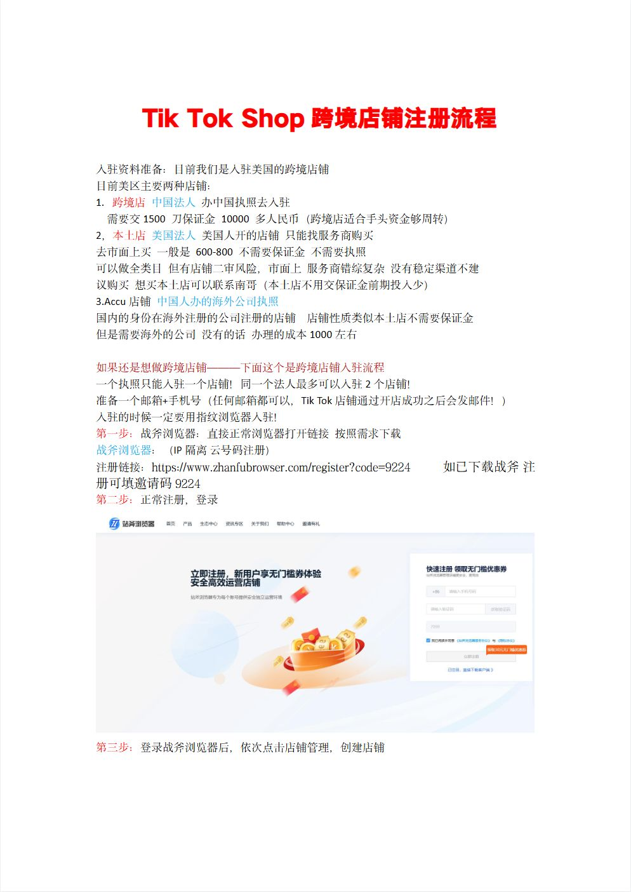
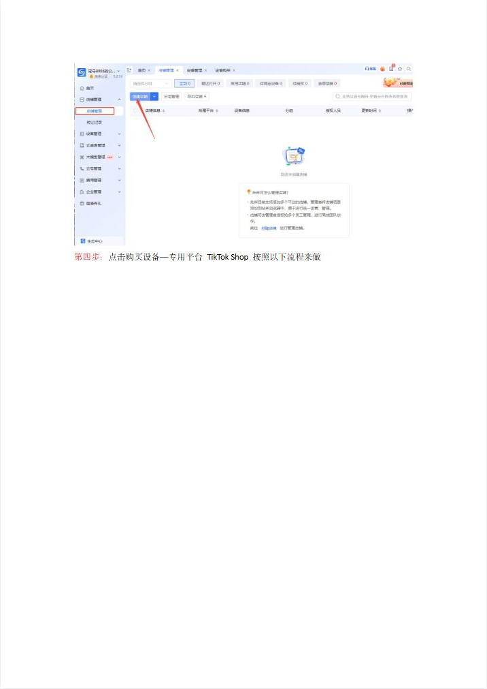
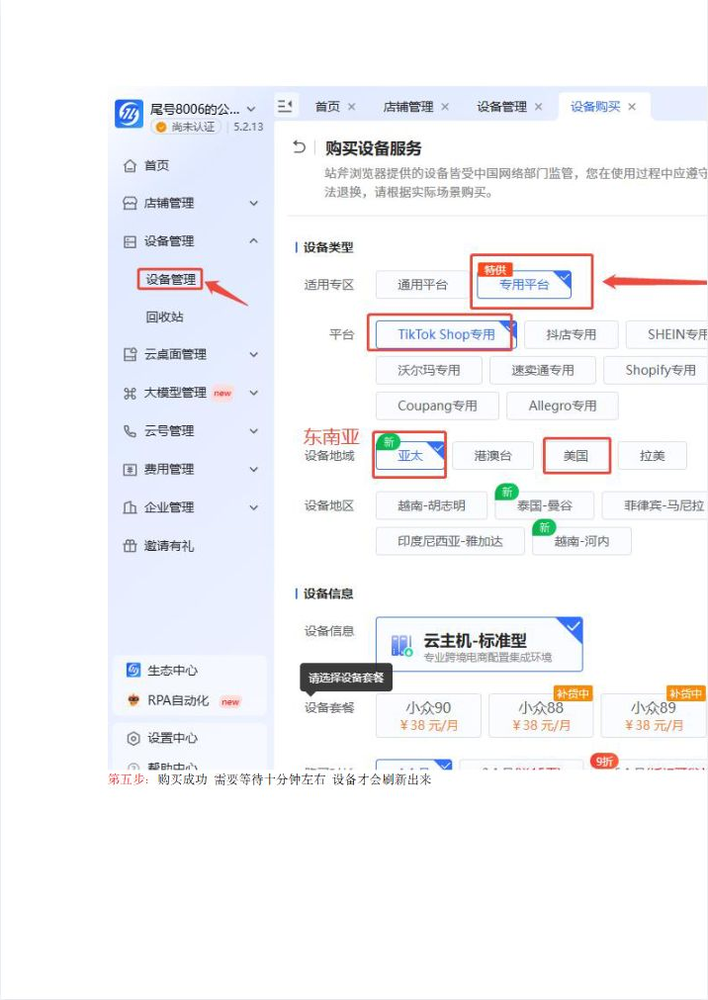
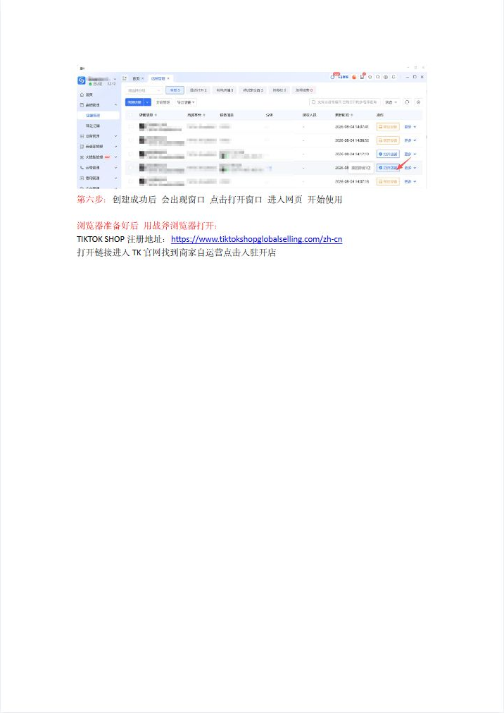
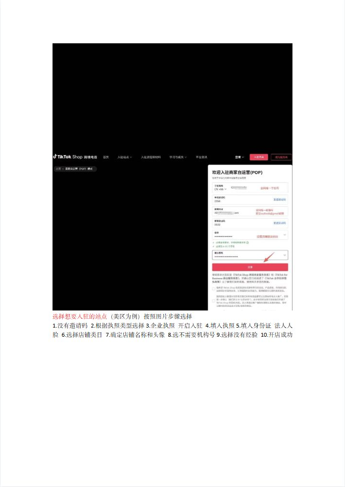
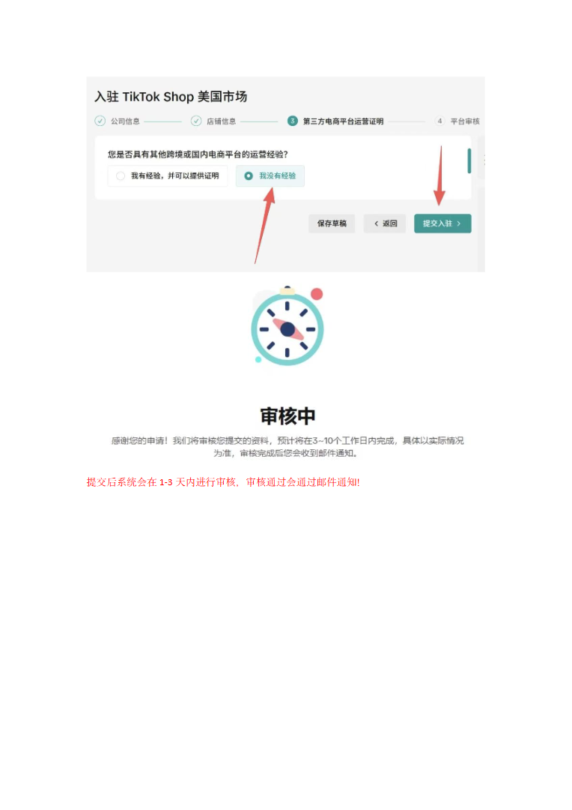

第 1 页

查看文字
TikTokShop跨境店铺注册流程
入驻资料准备：目前我们是入驻美国的跨境店铺
目前美区主要两种店铺：
1.跨境店中国法人办中国执照去入驻
需要交1500刀保证金10000多人民币（跨境店适合手头资金够周转）
2，本土店美国法人美国人开的店铺只能找服务商购买
去市面上买一般是600-800不需要保证金不需要执照
可以做全类目但有店铺二审风险，市面上服务商错综复杂没有稳定渠道不建
议购买想买本土店可以联系南哥（本土店不用交保证金前期投入少）
3.Accu店铺中国人办的海外公司执照
国内的身份在海外注册的公司注册的店铺店铺性质类似本土店不需要保证金
但是需要海外的公司没有的话办理的成本1000左右
如果还是想做跨境店铺———下面这个是跨境店铺入驻流程
一个执照只能入驻一个店铺！同一个法人最多可以入驻2个店铺！
准备一个邮箱+手机号（任何邮箱都可以，TikTok店铺通过开店成功之后会发邮件！）
入驻的时候一定要用指纹浏览器入驻！
第一步：战斧浏览器：直接正常浏览器打开链接按照需求下载
战斧浏览器：（IP隔离云号码注册）
注册链接：https://www.zhanfubrowser.com/register?code=9224如已下载战斧注
册可填邀请码9224
第二步：正常注册，登录
第三步：登录战斧浏览器后，依次点击店铺管理，创建店铺
第 2 页

查看文字
第四步：点击购买设备—专用平台TikTokShop按照以下流程来做
第 3 页

查看文字
第五步：购买成功需要等待十分钟左右设备才会刷新出来
第 4 页

查看文字
第六步：创建成功后会出现窗口点击打开窗口进入网页开始使用
浏览器准备好后用战斧浏览器打开：
TIKTOKSHOP注册地址：https://www.tiktokshopglobalselling.com/zh-cn
打开链接进入TK官网找到商家自运营点击入驻开店
第 6 页

查看文字
选择想要入驻的站点（美区为例）按照图片步骤选择
1.没有邀请码2.根据执照类型选择3.企业执照开启入驻4.填入执照5.填入身份证法人人
脸6.选择店铺类目7.确定店铺名称和头像8.选不需要机构号9.选择没有经验10.开店成功
第 11 页

查看文字
提交后系统会在1-3天内进行审核，审核通过会通过邮件通知！